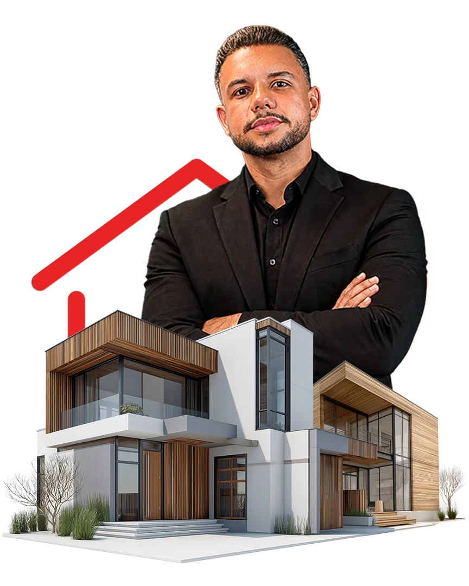

Planejamento Patrimonial Inteligente
Consultoria especializada em consórcio para aquisição de imóveis e automóveis de alto padrão, sem os juros do financiamento tradicional, com estratégia desenhada para o seu perfil financeiro e acompanhamento até a contemplação.

Sobre o Especialista
Sou Lucas Matos, especialista em consórcio e planejamento patrimonial. Meu trabalho começa antes da carta de crédito: entendo o seu momento financeiro, o bem que você deseja conquistar e o prazo real em que isso precisa acontecer. Só então desenhamos a estratégia.
Atendo famílias e investidores que buscam uma alternativa inteligente ao financiamento tradicional para adquirir imóveis e automóveis de alto padrão. A diferença não está no produto. Está na estratégia de escolha do grupo, no timing do lance e no acompanhamento até a chave na mão.
Atendimento consultivo, exclusivo e transparente, presencial em Serra/ES ou de forma remota para todo o Brasil.
Entenda a Estratégia
O consórcio é um sistema de autofinanciamento coletivo regulado pelo Banco Central. Um grupo de pessoas com o mesmo objetivo forma uma poupança comum e, mês a mês, seus integrantes são contemplados com uma carta de crédito para adquirir o bem desejado. Não há juros: você paga o valor do crédito corrigido e uma taxa de administração conhecida desde o primeiro dia.
Uma parcela mensal previsível que organiza o orçamento e transforma intenção em patrimônio, sem comprometer a liquidez do seu caixa.
Você conhece a taxa de administração e o prazo desde a assinatura. Sem surpresa de juros compostos ao longo de duas décadas.
A carta contemplada funciona como pagamento à vista, o que abre espaço para descontos relevantes na compra do imóvel ou do automóvel.
Comparativo entre consórcio e financiamento bancário tradicional
| Critério | Consórcio | Financiamento |
|---|---|---|
| Juros | Não há juros, apenas taxa de administração | Juros compostos por todo o contrato |
| Valor da parcela | Significativamente menor | Elevada desde a primeira parcela |
| Entrada | Não exige entrada | Normalmente 20% a 30% do bem |
| Poder de compra | Compra à vista, permite negociar desconto | Compra financiada, sem margem de negociação |
| Acesso ao bem | Na contemplação (sorteio ou lance estratégico) | Imediato, com custo total muito superior |
| Flexibilidade | Crédito pode ser usado em qualquer bem da categoria | Vinculado ao bem aprovado pelo banco |
Arraste a tabela para o lado para ver todas as colunas →
Comparativo ilustrativo com finalidade educativa. Condições variam conforme administradora, grupo, prazo e perfil do contratante.
A Consultoria
Um método de acompanhamento contínuo, do primeiro diagnóstico financeiro ao pós-contemplação. Você nunca fica sozinho com a administradora.
Mapeamos renda, capacidade de parcela, reservas disponíveis e objetivo patrimonial. É aqui que definimos se o consórcio é, de fato, a melhor ferramenta para o seu caso.
Conversar ↗Seleção criteriosa da administradora, do valor da carta, do prazo e do grupo com o melhor histórico de contemplação para o seu objetivo.
Conversar ↗Monitoramento das assembleias e planejamento do lance estratégico (embutido, livre ou com recursos próprios) para antecipar a conquista do seu bem.
Conversar ↗Apoio na avaliação do imóvel ou do automóvel, análise documental, negociação com o vendedor e liberação do crédito junto à administradora.
Conversar ↗Gestão do saldo devedor, reduções de parcela, uso estratégico de novas cotas e planejamento dos próximos passos do seu patrimônio.
Conversar ↗Tipos de Bens
Casas, apartamentos, terrenos, salas comerciais e imóveis para investimento. A carta de crédito também pode ser usada para construção, reforma ou para quitar um financiamento em andamento, trocando juros por taxa de administração.
Quero um plano para imóvel →Veículos nacionais e importados, zero quilômetro ou seminovos, além de frotas para empresas. Com a carta contemplada você negocia como comprador à vista e captura o desconto que o financiamento nunca oferece.
Quero um plano para automóvel →Diferenciais
Contratar uma cota é fácil. Contratar a cota certa, no grupo certo, com o lance certo. Isso exige método.
Nenhum plano de prateleira. Cada estratégia nasce do seu objetivo, do seu prazo e da sua realidade financeira.
Diagnóstico da capacidade de parcela e da reserva ideal para lance, antes de qualquer assinatura.
Do primeiro boleto à escritura ou ao emplacamento. Assembleias monitoradas e relatórios do andamento do seu grupo.
Custos, prazos, taxa de administração e fundo de reserva apresentados por escrito, sem letra miúda e sem promessa de contemplação.
Carteira limitada de clientes para garantir disponibilidade real e canal direto comigo, não com um call center.
Leitura do histórico do grupo para definir o momento e o percentual de lance com maior probabilidade de sucesso.
Depoimentos
Eu ia financiar o apartamento e só enxergava a parcela. O Lucas me mostrou o custo total dos 30 anos. Refizemos o plano com consórcio, fui contemplado por lance e comprei à vista com desconto.
O que mais me marcou foi a honestidade. Ele analisou meu perfil e disse que, para o meu prazo, eu deveria ajustar o valor da carta. Ninguém tinha sido tão direto comigo antes.
Troquei de carro sem tirar dinheiro dos meus investimentos. O acompanhamento nas assembleias e a orientação sobre o lance fizeram toda a diferença no resultado final.
Sempre achei que consórcio era loteria. O Lucas me mostrou os números, escolheu o grupo certo e consegui a contemplação por lance antes do que eu imaginava.
Usei a carta para quitar parte do financiamento da minha casa e reduzi muito o custo total. O acompanhamento pós-contemplação também fez toda a diferença.
Comprei a sala comercial do meu consultório à vista com a carta contemplada. Negociei um desconto que jamais conseguiria financiando.
Dúvidas Frequentes
É uma modalidade de compra programada regulada pelo Banco Central e pela Lei 11.795/2008. Pessoas com o mesmo objetivo formam um grupo, contribuem mensalmente e, a cada assembleia, integrantes são contemplados com uma carta de crédito para adquirir o bem. Não existe cobrança de juros: o custo é a taxa de administração, informada antes da contratação.
Não existe data garantida. Quem promete isso não está sendo honesto. A contemplação ocorre por sorteio ou por lance, nas assembleias mensais. O que a consultoria faz é aumentar as suas chances: escolhendo grupos com histórico favorável e planejando um lance estratégico compatível com a sua reserva.
É a remuneração da administradora pela gestão do grupo, diluída nas parcelas ao longo de todo o plano. Ela substitui os juros do financiamento e, no cômputo total, costuma representar um custo bem inferior. É um percentual conhecido e fixo desde a assinatura do contrato.
O lance é uma antecipação de parcelas ofertada na assembleia: quem oferta o maior percentual é contemplado. Existem modalidades diferentes: lance livre (com recursos próprios), lance embutido (usando parte da própria carta de crédito) e lance fixo. Definir qual usar, quando e em que percentual é justamente onde a consultoria gera mais valor.
Sim. As administradoras de consórcio são autorizadas e fiscalizadas pelo Banco Central do Brasil, que também audita os grupos. Os recursos do grupo são segregados do patrimônio da administradora. Trabalho apenas com administradoras sólidas e com histórico verificável.
É possível transferir a cota a terceiros ou solicitar o cancelamento. Nesse caso, os valores pagos são devolvidos conforme as regras contratuais e o encerramento do grupo, com os descontos previstos em contrato. Avaliar esse cenário faz parte da análise de perfil.